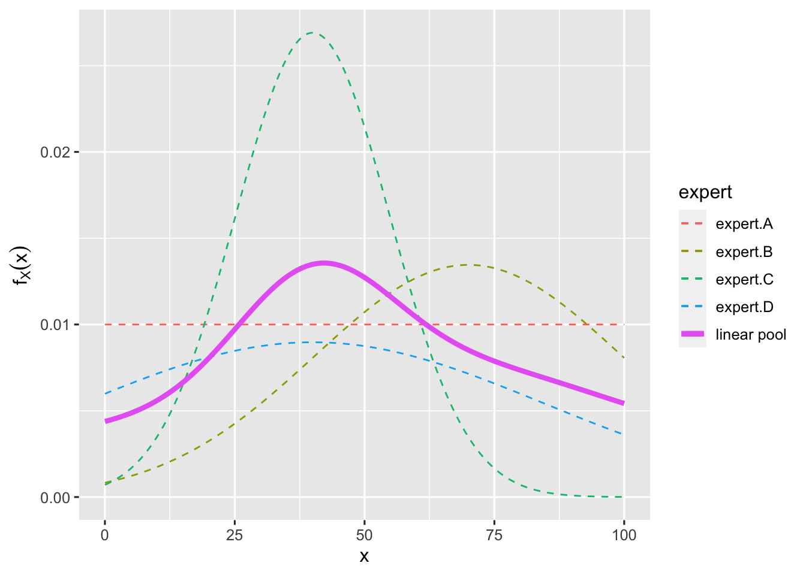
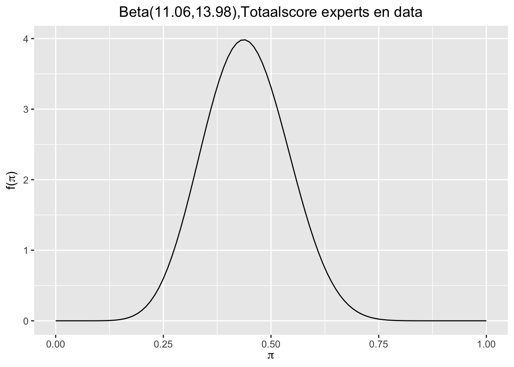

Hoe je schattingen maakt van uitkomsten door kennis van experts in te zetten, hoe zet je dit proces uit, hoe bereken je het en hoe combineer je deze kennis weer met data.
modelleren
Bayesiaans
Author
HarrieJonkman
Published
December 8, 2022
Inleiding
Een belangrijk kenmerk van Bayesiaanse analyse is het incorporeren van kennis teneinde de kwaliteit van conclusies en voorspellingen te verbeteren. Dat is zeker belangrijk als er geen of beperkte data beschikbaar zijn. Kennis vooraf is er veelal voordat je met een onderzoek begint. Er zijn eerder studies gedaan of je kunt de kennis van experts gebruiken om deze priors te definiëren. In ieder geval is het belangrijk de kennis zichtbaar en expliciet te maken in je onderzoek zodat anderen het kunnen beoordelen en bekritiseren.
In deze blog laat ik zien hoe we de kennis van experts kunnen gebruiken om schattingen te maken. Hier wordt gebruik gemaakt van moderne schattingstechnieken en met name de SHELF-methode (Cooke, 1991; Cooke & Goossens, 1999; European Food Safety Authority, 2014; Gosling, 2018; Morris et al., 2014; O’Hagan et al., 2006; Zondervan-Zwijnenburg et al., 2017). Experts weten veel over een bepaald onderwerp maar hebben vaak moeite om goede schattingen te maken. De SHELF-methode helpt ons hier goed mee om te gaan en geeft praktische en statistische ondersteuning in het schattingsproces. Dat proces staat onder begeleiding van een facilitator die hierin is getraind. Zelf heb ik vlak voor het uitbreken van de coronaepidemie aan zo’n training van Tony O’Hagan meegedaan.
Hieronder beschrijf ik het schattingsproces van het SHeffield ELicitation Framework in het kort, dat in een aantal publicaties goed is omschreven (O’Hagan, 2019; O’Hagan et al., 2006; Oakley & O’Hagan, 2016). De data die in dit voorbeeld gebruikt worden sluiten aan bij het vierde hoofdstuk van het Bayesrules! boek
Attaching package: 'janitor'
The following objects are masked from 'package:stats':
chisq.test, fisher.test
De data gaan over de Bechdel-test, die iets zegt over de representatie van vrouwen in films. In het stripverhaal The Rule van Alison Bechdel uit 1985 stelt een personage dat ze een film alleen zien als die aan de volgende drie regels voldoet (Bechdel 1986):
in de film moeten minstens twee vrouwen voorkomen;
deze twee vrouwen praten met elkaar; en
ze praten over iets anders dan een man.
Deze criteria vormen de Bechdel-test. Als je denkt aan films in de periode 1980-heden, welk percentage daarvan voldoet volgens jou aan de Bechdel-test? Is dat eerder 10%, 50%, 80% of 100%?
Stel dat je nu precies dat percentage wilt vaststellen. Precieze studies hierover zijn er vooralsnog niet en het enige dat je kunt doen is gebruik maken van de kennis van experts. Voor het schatten hiervan nodig je vier experts uit.
De elicitatiemethode om het percentage vast te stellen wordt in twee rondes met in totaal acht stappen uitgewerkt. Het resultaat kan al het een resultaat van een onderzoek zijn. In dit blog wordt het resultaat van zo’n expertschatting ook nog eens gekoppeld aan een klein onderzoek. De prior van de experts en de resultaten van dat onderzoek worden gecombineerd tot eindresultaat.
Eerste ronde van het Elicitatieproces
Definiëren van het problemem: Om het percentage van de Bechdel-test vast te stellen gaan we met een groep van vier experts in gesprek. Voor de uitvoering van deze procedure is allereerst informatie verzameld over vrouwen in de film, hun rol daarin en aanvullende informatie. De drie regels waaraan de test moet voldoen is zo helder mogelijk gedefinieerd voor de experts,
Selecteren van experts: Vervolgens is er een groep experts geselecteerd. Voor experts hebben we gezocht naar een goede mengeling uit filmwetenschap en -industrie. We hebben mensen betrokken die een goed begrip hebben van het probleem en ook openstaan voor andere meningen. Uiteindelijk is er gekozen voor vier experts: een algemene filmwetenschapster (A), een wetenschapster op het terrein van vrouwenstudies en film (B) en iemand uit de filmindustrie (C) en een cultuurwetenschapper (D).
Evidence dossier: Voor de uitvoering van de procedure is een evidence dossier gemaakt, dat belangrijke informatie omvat waarmee experts hun mening over het percentage dat voldoet aan de Bechdel-test kunnen onderbouwen. Dat dossier is gevuld met informatie over het doel van het onderzoeksproject, met informatie over het eerder uitgevoerde filmonderzoek, praktijkonderzoek en enkele relevante meta-analyses die zijn uitgevoerd. Dit dossier is toegestuurd nadat experts waren uitgenodigd en hadden aangegeven dat ze willen deelnemen. Dit evidence-dossier is ook nog een keer doorgenomen toen de experts samenkwamen in de tweede ronde.
Trainen van experts: De experts kregen een overzicht van het schattingsproces en het gebruik van subjectieve waarschijnlijkheid en waarschijnlijkheidsdistributies. De informatie over de procedure (eerst een mediaan (p50) en de andere twee tertielscores (p25 en p75) is in een kort document gezet, dat is toegestuurd. Het is verwerkt in een korte power-point presentatie bij de tweede ronde waarin de experts samenkwamen.
Schatten van individuele priors: De vier individuele experts hebben in een eerste ronde individueel hun schattingen meegedeeld in een aangeleverd format. De experts ontvingen een eenvoudig gereedschap om de invloed van de werkzame elementen te schatten. Hier hebben we de tertielmanier toegepast: iedere deelnemer ontving 20 muntjes die ze moesten verdelen over een schattingsformulier van 0-100 met tientallen. Waar ligt de mediaan (p50). Dan de linkerhelft van de muntjes waar ligt hier de p25 grens/ Vervolgens de andere muntjes, waar ligt hier de p75-grens van de resterende muntjes? Schattingen van individuele priors zijn vervolgens door de facilitator zichtbaar gemaakt (experts wisten in deze fase niet wat anderen hebben geschat). De resultaten van de individuele schattingen zijn daarvoor verwerkt in het programma R met het pakket SHELF (Oakley& O’Hagan, 2019).
Resultaten eerste ronde in R bewerken
De resultaten van de vier experts zijn verwerkt met het pakket SHELF in R. Als je de volgende handeling uitvoert verschijnt het invoerprogramma.
Je ziet de resultaten van de vier experts.
- Expert A zegt dat hij hierover niets durft te zeggen. De twintig muntjes heeft hij gelijk verdeeld over het formulier (twee muntjes per tiental). De mediaan ligt op 50 en de drie tertielen zijn gelijk verdeeld.
- Volgens Expert B voldoet het merendeel aan de test en zij legt de mediaan op 70 (tien muntjes ter linke en tien muntjes ter rechtezijde). Het 25ste percentiel ligt op 50 en het 75ste percentiel ligt op goed. Zij is de enige optimistische expert in dit gezelschap.
- Expert C legt de 50grens op 40, de 25grens op 30 en 75grens op 50. De resultaten liggen bij hem redelijk dicht bij elkaar en dat betekent dat hij redelijk zeker is van z’n zaak.
- Expert D legt de 50grens ook op 40, en wat dat betreft zijn C en D het met elkaar eens. Alleen deze expert is net iets minder zeker over deze zaak. Zij legt de 25grens op 10 en de 75grens op 70.
De resultaten van de individuele schattingen zijn vervolgens door de facilitator in het distributierapport ingevoerd en dat rapport vind je hier
De resultaten van de individuele schattingen kun je ook op een volgende manier uitschrijven.
En dit zijn de distributies, inclusief het totaal resultaat (de resultaten van de vier experts samengebracht). Je ziet hier weer Expert A die hier niets over durft te zeggen, de optimistische Expert B, met de negatievere Expert C die redelijk zeker is over de zaak en de negatieve Expert D die meer onzeker is.
plotfit(myfit, lp =TRUE)

De gegevens van de eerste ronde kunnen in dit SHELF-document worden geplaatst. hier
Tweede ronde van het Elicitatieproces
Bovenstaande kan de faciltator doen op basis van de individuele schattingen. In de tweede ronde worden de experts samengebracht. In die ronde worden de individuele resulaten zichtbaar gemaakt aan de experts, met elkaar besproken en geprobeerd op basis van een discussie tot een onderbouwd totaalresultaat te komen. In deze gezamenlijke tweede ronde worden de laatste drie stappen in het elicitatieproces gezet.
Bediscussiëren van indiviuele resultaten
In een tweede ronde worden de resultaten van individuele schattingen gedeeld en besproken, die ondertussen door de facilitator bewerkt en gevisualiseerd zijn, zoals hierboven besproken. De tertielen, het rapport en de distributies worden gepresenteerd en toegelicht door de facilitator. De experts lichten vervolgens de rationale van hun eigen overtuiging nog eens toe (waarom ze de uitkomst zo inschatten en hoe zeker ze zijn over hun eigen schatting). De overeenkomsten en verschillen worden zichtbaar gemaakt en de experts spreken met elkaar hierover door.
Overeenkomen op consensus prior
Daarna identificeerden de experts vervolgens in deze tweede ronde (de eerste bijeenkomst met elkaar) ook het gedeelde percentage van de Bechdel-test. Hier wordt met elkaar als het ware een ‘consensus prior’ van de experts vastgesteld en vormen ze zo met elkaar het standpunt van de Rationeel Onafhankelijke Observator (Rational Impartial Observator). Op deze manier definiëren ze een voorstel (een schatting) waar ze het met elkaar over eens of, allicht beter geformuleerd, zoveel mogelijk over eens zijn. Deze totaalschatting is gebaseerd op de discussies die ondertussen met elkaar zijn gevoerd en laat de uitkomst zien waarin alle experts zich onder leiding van de facilitator kunnen vinden.
Stel dat in de discussie en lang beraad uiteindelijk wordt vastgesteld dat de P50-grens op 40 ligt, p25-grens op 25 en p75-grens op 55 ligt. Dit zetten we nogmaals in R.
Laat \(pi\), een willekeurige waarde tussen 0 en 1, staan voor het onbekende aandeel van recente films die de Bechdel-test doorstaan. Vier experts hebben voor de volgende totaalscore gekozen:
Documentatie: Op basis van deze twee rondes hebben is een verslag in twee delen geschreven van het gehele identificatie en schattingsproces. De resultaten worden hieronder samengevat.
De gegevens van de tweede ronde kunnen in dit SHELF-document worden geplaatst. hier
De posterior van de experts als prior gebruiken
Nu we dit weten van de experts besluiten we vervolgens een willekeurige steekproef van \(n=20\) recente films te bekijken met behulp van gegevens die verzameld zijn over de Bechdel-test. Het pakket bayesrules bevat een gedeeltelijke versie van deze dataset, genaamd bechdel. Een volledige versie wordt geleverd door het pakket fivethirtyeight R (Kim, Ismay en Chunn 2020). Samen met de titel en het jaar van elke film in deze dataset, registreert de binaire variabele of de film de Bechdel-test heeft doorstaan of niet:
# Importeer datadata(bechdel, package ="bayesrules")# Haal ert een sample uit van 20 filmsset.seed(84735)bechdel_20 <- bechdel %>%sample_n(20)bechdel_20 %>%head(3)
# A tibble: 3 × 3
year title binary
<dbl> <chr> <chr>
1 2005 King Kong FAIL
2 1983 Flashdance PASS
3 2013 The Purge FAIL
Van de 20 films in deze steekproef slaagden er slechts 9 (45%) voor de test:
binary n percent
FAIL 11 0.55
PASS 9 0.45
Total 20 1.00
Dus 9 van \(n=20\) geselecteerde films voldoet aan de Bechdel test. De prior van de experts was \(2.06,2.98\) en de posterior wordt dan \(11.06,23.98\) omdat je aan \(\alpha=2.06\) 9 en aan \(\beta=2.98\) 11 toevoegt. Oftewel:
Dit wordt dan de nieuwe posterior, die een combinatie is van de prior zoals vastgesteld door de experts en de data die we verzameld hebben. Dat figuur ziet er dan zo uit:
plot_beta(11.06, 13.98) +ggtitle("Beta(11.06,13.98),Totaalscore experts en data")

Conclusie
Aan de hand van een simpel voorbeeld hebben we laten zien hoe het schattingsproces van een bepaalde uitkomst door experts en onder begeleiding van een facilitator verloopt. Wanneer het moeilijk is om een bepaalde uitkomst te schatten, is dit een goede werkwijze. De uitkomst die dat oplevert kan op zich goed gebruikt worden als schatting. Het is ook mogelijk om deze schatting als prior te gebruiken en te koppelen aan een bepaalde dataset. De combinatie van kennis van experts en inzichten via een verzamelde dataset scherpt onze kennis vervolgens aan. We hebben laten zien hoe dit kan worden uitgevoerd in R.
Literatuur
Burgman, M.A. (2015). Trusting Judgements: How to Get the Best Out of Experts, Cambridge, UK: Cambridge University Press
Cooke, R. M. (1991). Experts in Uncertainty: Opinion and Subjective Probability in Science. New York, NY: Oxford University Press.
Cooke, R. M., and Goossens, L. (1999). Procedures Guide for Structured Expert Judgment. Brussels: Commission of the European Communities.
European Food Safety Authority (2014). Guidance on Expert Knowledge Elicitation in Food and Feed Safety Risk Assessment. EFSA Journal 2014, 12(6), 3734.
Goossens, L., Cooke, R., Hale, A., and Rodić-Wiersma, L. (2008). Fifteen years of expert judgement at TUDelft. Safety Sci. 46, 234–244. doi: 10.1016/j.ssci.2007.03.002
Gosling, J.P. (2018). SHELF: The Sheffield Elicitation Framework, in: Elicitation: The Science and Art of Structuring Judgements, eds. L.C.Dias, A. Morton and J. Quigley. Springer, 61-93.
Hanea, A.M., McBride, M.F., Brugman, M.A., and Wintle, B.C. (2018). Classical Meets Modern in the IDEA Protocol for Structured Expert Judgement. Journal of Risk Research, 4, 417-433.
Mikkola,P., Martin, O.A.,Chandramouli, S., Hartmann, M.,Pla, O.A., Thomas, O., Pesonen, H., Corander,J., Vehtari, A., Kaski, S., Bürkner,P.C. & Klami, A. Prior knowledge elicitation: The past, present, and future. arXiv:2112.01380v1 [stat.ME] 1 Dec 2021. https://arxiv.org/pdf/2112.01380.pdf
Morris, D. E., Oakley, J. E., and Crowe, J. A. (2014). A web-based tool for eliciting probability distributions from experts. Environ. Model. Softw. 52, 1–4. doi: 10.1016/j.envsoft.2013.10.010
Oakley, J. E., and O’Hagan, A. (2016). SHELF: the Sheffield Elicitation Framework (Version 3.0) [Computer Software and Documentation]. School of Mathematics and Statistics, University of Sheffield.
O’Hagan, A. (2019). Expert Knowledge Elicitation: Subjective but Scientific. The American Statistician, 73, 68-81.
O’Hagan, A., Buck, C. E., Daneshkhah, A., Eiser, J. R., Garthwaite, P. H., Jenkinson, D. J., et al. (2006). Uncertain Judgements: Eliciting Experts’ Probabilities. Chichester: John Wiley & Sons.
Zondervan-Zwijnenburg, M., Schoot-Hueek, W. van de, Lek, K., Hoytink, H., and Schoot, R. van de (2017). Application and Evaluation of an Expert Judgment Elicitation Procedure for Correlations. Frontiers in Psychology, 31, doi: 10.3389/fpsyg.2017.00090